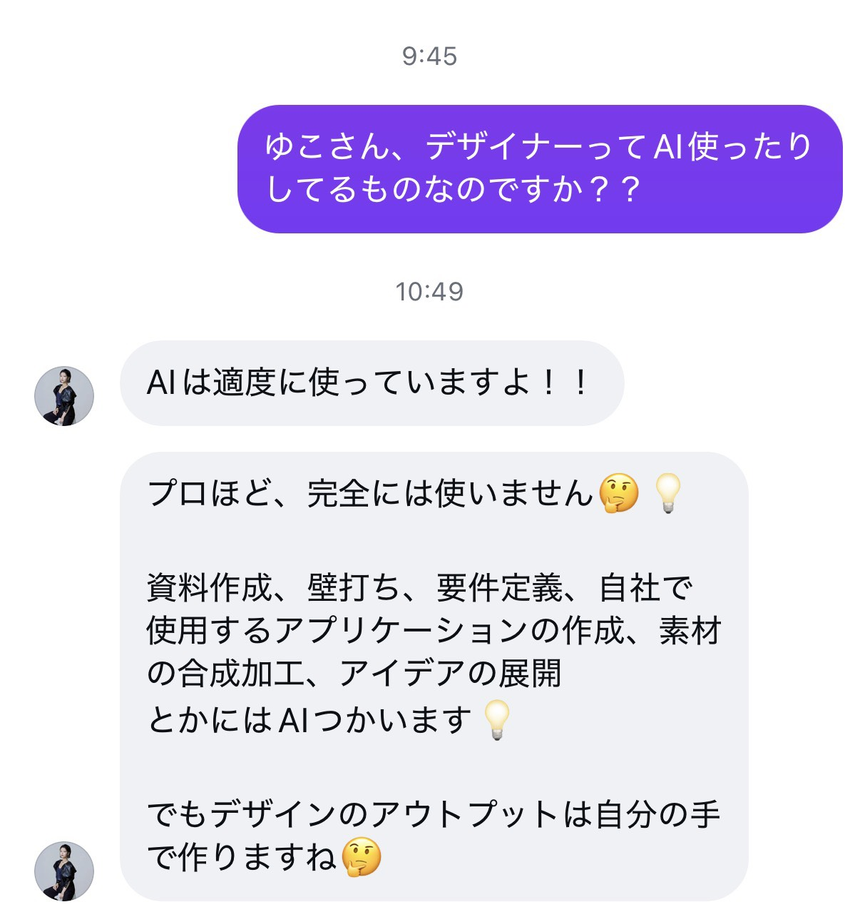

NAVIGATORはるか
AI活用、いまの
立ち位置チェック
3分セルフチェック｜lilisコンサル 受講生・卒業生 限定
AIを「使っている」人は多いのに、「仕事の成果につながる使い方」ができているかは、自分では見えにくいものです。3分で、いまの立ち位置を一緒に確認しましょう。
あなたの結果
あなたの現在地
0／5
AIへの事前設定
AIの実力を引き出せている目安
なぜ「それっぽい答え」で止まるのか
ChatGPTもClaudeも、その場で壁打ちをすれば、それっぽい答えを返してくれます。もともとAIは、そう設計されているからです。
一方で、案件を取り続けているデザイナーは、最初に1〜2時間かけて、自分のトンマナ・判断基準・「どの基準値でやるべきか」を3〜4万字ぶん、あらかじめAIに入れています。そうしないと、AIは正しく機能しません。
AIは使えば使うほど学習します。けれど、正しく使えない状態が長く続くほど、その場限りの答えだけが積み上がっていきます。だから「情報を蓄積させること」と「その情報ソースと判断基準が正しいかを精査すること」の両方が必要です。
事前の設定なしで使うと、AI本来の実力は30%も発揮されません。
プロのデザイナーは、実際どう使っているか
案件獲得からアウトプットまで、すべてをAIでやる人は少数です。でも、案件の整理・要件定義・資料作成・素材の加工・アイデア出しはAIでベースを作り、最後を自分の手で仕上げる。これが、いま案件を回しているデザイナーの標準です。

むしろ、AIを使えないと、この先は案件獲得を回していくこと自体が難しくなります。
答え合わせ：5つの質問の解説
AIが事実と違うことを自信たっぷりに答えるとき
これは「ハルシネーション」と呼ばれる、AIの仕組み上どうしても起きる現象です。有料版でも起きます。根拠を確かめる習慣が、AIを仕事で使う土台になります。
新しいチャットは、昨日の相談を覚えているか
チャットごとに記憶は分かれます。あなたの前提・好み・過去の相談は、渡し直さないとゼロから始まります。「自分の情報が育っていく場所」を別に持つと、毎回の渡し直しがなくなります。
「素晴らしい提案です！」は、通る根拠になるか
AIは一般的な基準で「文章として良いか」を見ます。「その案件で、その相手に、通るか」は、案件獲得の現場を見てきた人の基準でしか判断できません。
育てた情報を、別のAIへ引っ越す方法
AI同士は情報を共有しません。「自分の取扱説明書」を作って渡すのが、いちばん確実な引越しの方法です。
AIが出してきた「相場」「単価」の数字
数字は特にハルシネーションが起きやすい領域です。もっともらしい数字ほど、実データと突き合わせてください。
開いたままの項目が、選び直したい問いです。正解できた問いは、たたむと読みやすくなります。
ここまでで見えたのは、「知識」「事前設定」「精査」の3つです。
この3つをどう整えればいいかを知りたい方は、下のボタンを押してください。はるかから、個別にご連絡します。
ありがとうございます。はるかから、個別にご連絡します。
9/18の勉強会アーカイブを見るGoogleドライブが開きます回答は、はるかが読んで今後の内容づくりに使います。お名前と回答が、他の方に見えることはありません。